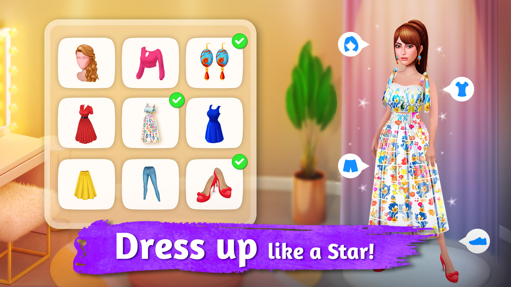
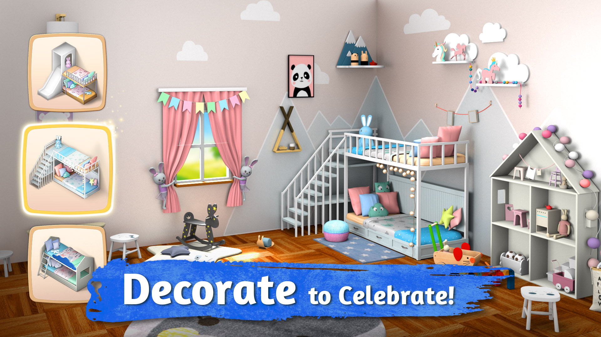
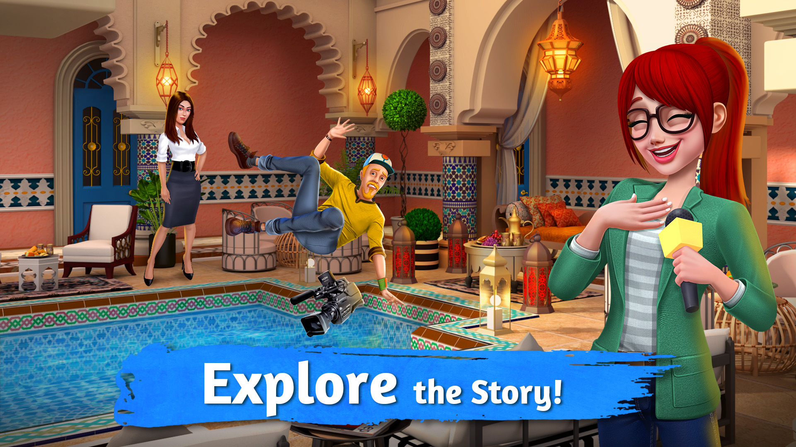
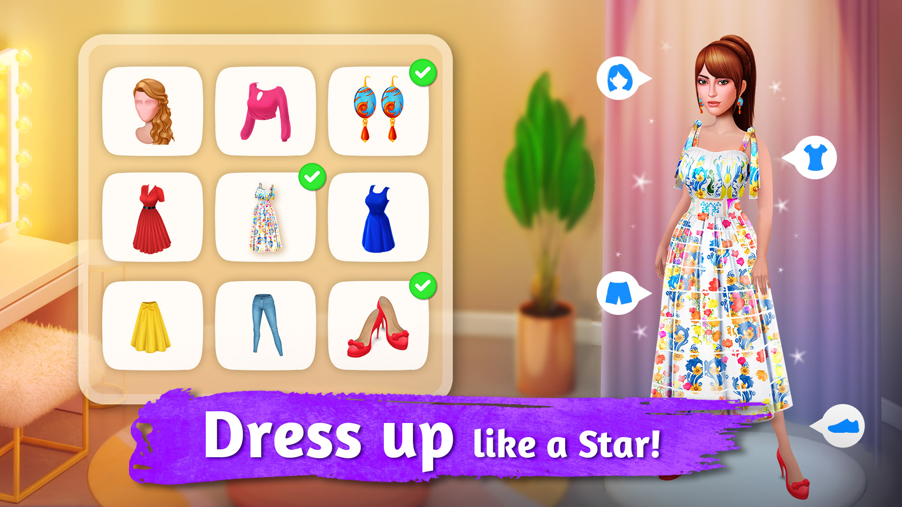
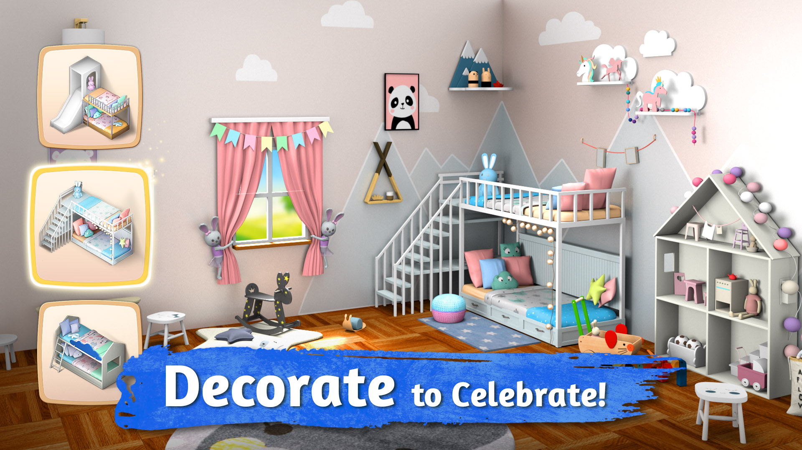
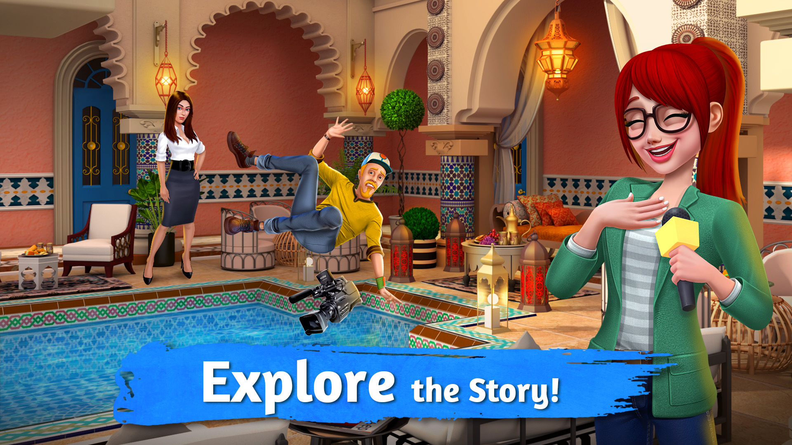
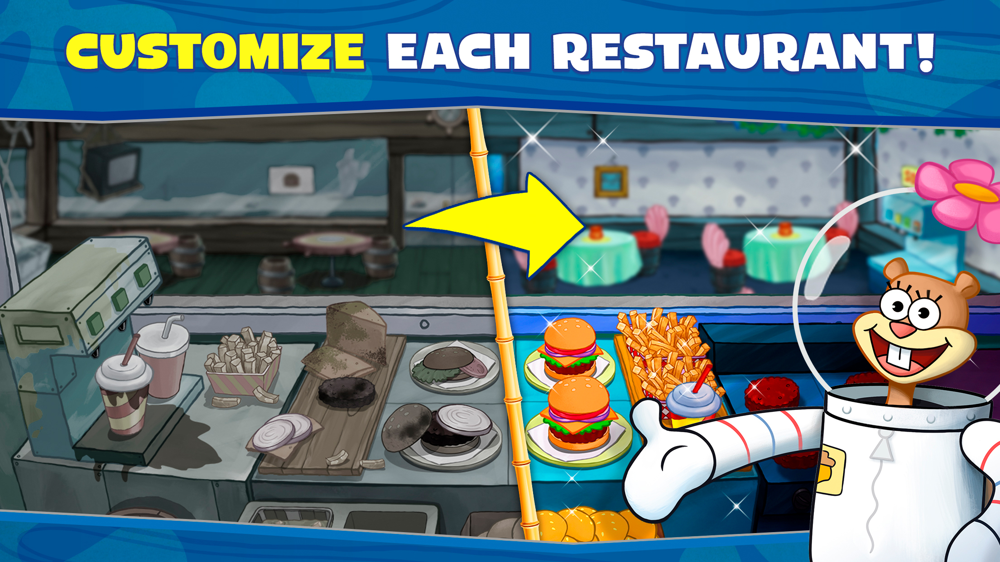
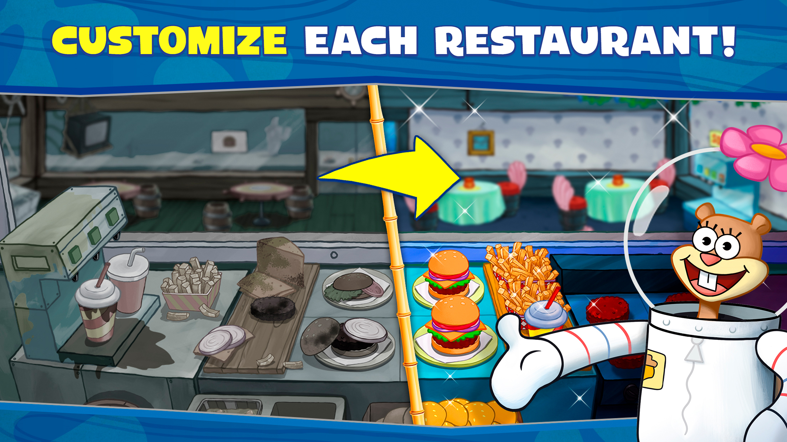
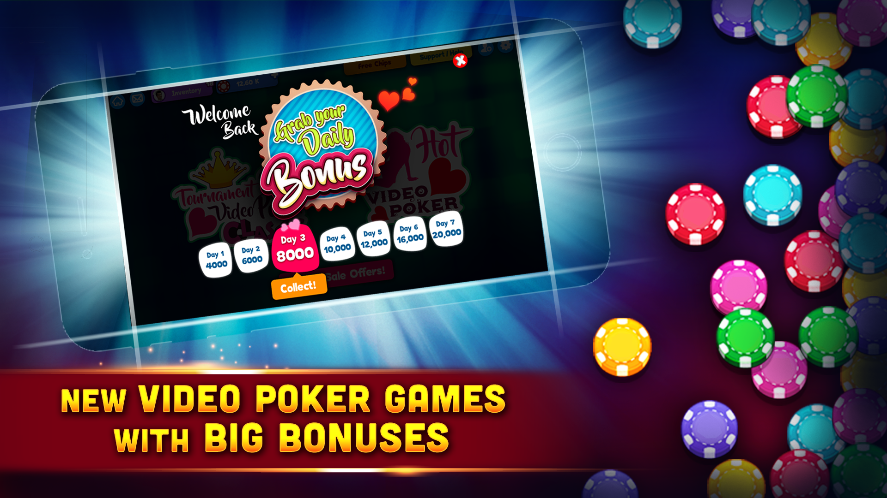
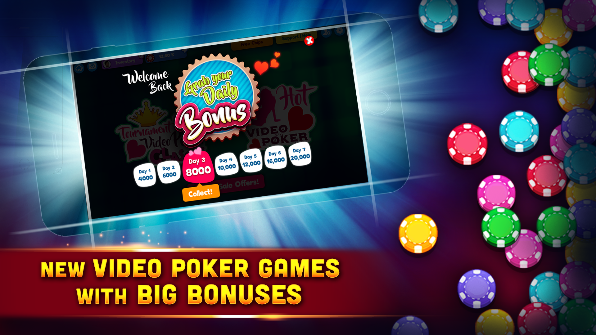

Our Expertise
We specialize in a wide range of developments:
- Mobile Apps via Unity
- UI Framework Development
- 2D and 3D Casual Games
- Casino Games
- 3D Simulation Games
- Single or Multiplayer Games
- Native Plugins Integration
- Unity Platforms: Android, iOS, Windows Mobile/PC, WebGL, Facebook Gameroom, TvOS (Apple), Chromecast (Android TV)
Highlighted Projects
Room Flip - Home Decor
Role: Project Lead
Description: Transform your design ideas into reality. Master your home decor & design skills by building houses, designing floor & decor interiors, and renovating dirty rooms in this My Home Design - House Game & renovation games. Express your creativity with unique interior decoration styles & renovation skills. If you're crazy about real home decor, house games, home design, home makeover, and decorating games, then this Room Flip™ My Home Design - House Game is definitely for you! Travel to exotic locales with Rex & Zara on this TV show game where you renovate devastated houses, furniture, and interiors, giving them a second life in this my home design & house flipper decorating game.
 







Spongebob Krusty Cook-Off
Role: Developer
Description: Cook delicious food and drinks in this FREE online cooking game! Play with SpongeBob SquarePants in this restaurant simulator game and become a chef in a hilarious adventure across different restaurants. SpongeBob SquarePants is waiting to prepare your favorite food, burgers, and drinks across the restaurants of Bikini Bottom. Enjoy creating your own kitchen, decorating and customizing your furniture, improving your cooking chef skills, and getting ready to serve delicious food to your guests in this café simulation game.
Additional Features: Participate in fast-paced time management challenges, cook delicious Krusty fast food in addictive cook-off challenges, unlock new restaurants and cooking challenges, and enjoy a hilarious storyline with familiar characters from the show.

 



Dream Ludo
Role: Developer
Description: Dream Ludo is a cross-platform multiplayer Ludo game supporting Facebook, Android, iOS, and offline mode. Play with your friends or challenge the AI in this exciting version of the classic board game. Utilize unique power-ups, double dice, and team play features to outsmart your opponents and become the Ludo champion.
Features: Multiplayer gameplay with web sockets, behavior trees for AI logic, custom plugins, real money transactions, native share and push notifications, and dynamic in-app purchases.
Teen Patti Platinum - Indian Card Poker
Role: Developer
Description: Play Teen Patti - Platinum with awesome graphics and experience like never before. Join millions of players around the world in real-time. Enjoy multiple variations like AK47, Lowest Jokers, blackjack, and 20+ modes. Join our exclusive 123 mode and premium table to be the #1 gambler. Live leaderboards, real players, and exciting rewards await you.
Features: Unique modes, exclusive tables, live leaderboards, and real-time multiplayer matches with friends and players worldwide.


Video Poker - Play Online or Offline
Role: Developer
Description: Enjoy the best free video poker game! Play unique poker machines like Joker Poker, Jacks or Better, Deuces Wild!, High Stakes, and Bonus Poker. Feel the excitement with big wins, daily bonuses, and special challenges. Unlock new rooms and features as you progress through the game.
Features: Multiple poker machines, big wins with triple pay, daily bonuses, achievements, and unlockable rooms.


 

Bingo Games
Role: Developer
Description: Play Big Balls Bingo for a fun experience like never before. The most engaging mobile bingo game from Topaz Star Entertainment. Enjoy a variety of bingo rooms, exciting power-ups, and beautiful graphics. Play with multiple bingo cards, compete globally, and customize your game with various daubers and backgrounds.
Features: Multiplayer gameplay, daily and weekly tournaments, exotic city graphics, and seasonal events with exciting rewards.


Ronnie Cop
Role: Developer
Description: Ronnie's journey as a police officer was commendable. Post his voluntary transition into bodybuilding, his call of duty was needed due to increased bank robberies. His legacy continues as 'Ronnie Cop'. This endless runner game follows Ronnie's adventures as he catches criminals and keeps the city safe.
Features: Exciting gameplay, engaging storyline, and dynamic challenges.
Happs
Role: Developer
Description: Happs is a dynamic geo-mapped data visualization system that provides data including roads, buildings, trees, roofs, and other elements of an urban area. It customizes the data according to structured queries, offering a comprehensive view of the specified geographical location.
Features: Detailed 3D map generation, customizable data visualization, and integration with various data sources.

Zappy Squirrel
Role: Developer
Description: Help Zappy the squirrel run, jump, climb, and use whatever tools are available to get through all the obstacles at the metropolis electric power station. Eddy, a highly regarded engineer and entrepreneur, has designed a series of deterrents to keep our animal friends out of the metropolis power substation. Small animals are notorious for finding a way into power substations, resulting in equipment damage and unplanned outages. These deterrents will help keep the lights on in metropolis by keeping the animals out. Eddy has hired Professor Zappy the squirrel - scientist, engineer, and adventurer - to help test the designs by breaking through them. Aside from the usual consulting fee, Eddy has placed acorns along the way for extra incentive.
Poptropica
Role: Developer
Description: Immerse yourself in the Poptropica, a massively multiplayer online game where players explore vibrant virtual worlds filled with adventure, mystery, and social interactions! Create your own customizable character and embark on exciting quests, solve mysteries, and connect with millions of kids from around the world in this fun, safe, and engaging environment. Journey to various unique islands, each with its distinct theme, gameplay, and storyline! Visit historic places like the Wild West and Ancient Greece, or dive into fantastical realms such as a haunted island and a futuristic city. Tackle diverse challenges, puzzles, and enemies on each island adventure. In Poptropica's virtual world, players can socialize and form communities, visit each other's islands, trade items, and even play mini-games together. This online multiplayer RPG game encourages making new friends and enhancing the overall experience. Poptropica is suitable for all ages, providing a safe and moderated environment for players to enjoy. The app also features a parent account option, allowing parents to monitor playtime.
Pro Feel Golf
Role: Developer
Description: Pro Feel Golf - Sports Simulation is an action sports game with a very intuitive, one-handed, one-touch control system that lets you enjoy a new style of golf. Challenge your friends or play with random players in the world, or even invite them to compete for rewards in your tournaments. It's easy to learn, fun to play, and perfect for casual players.